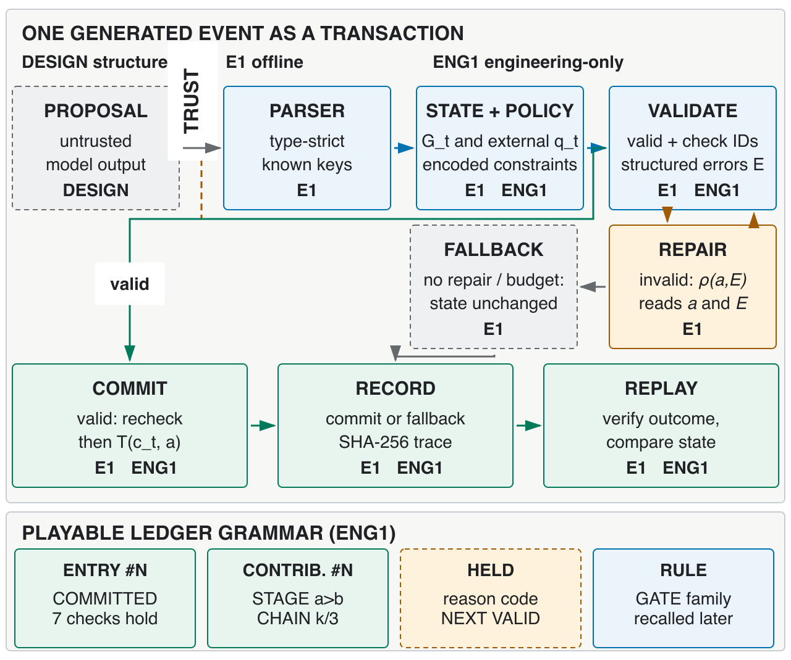
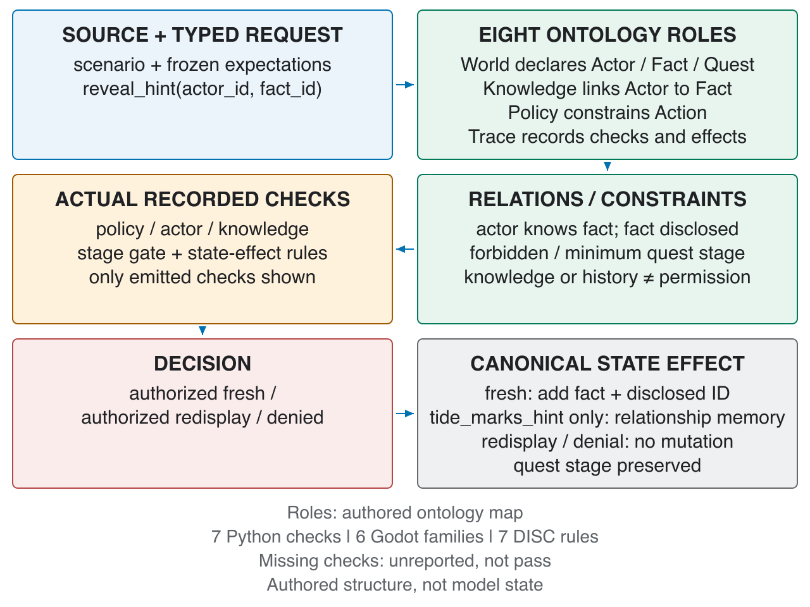
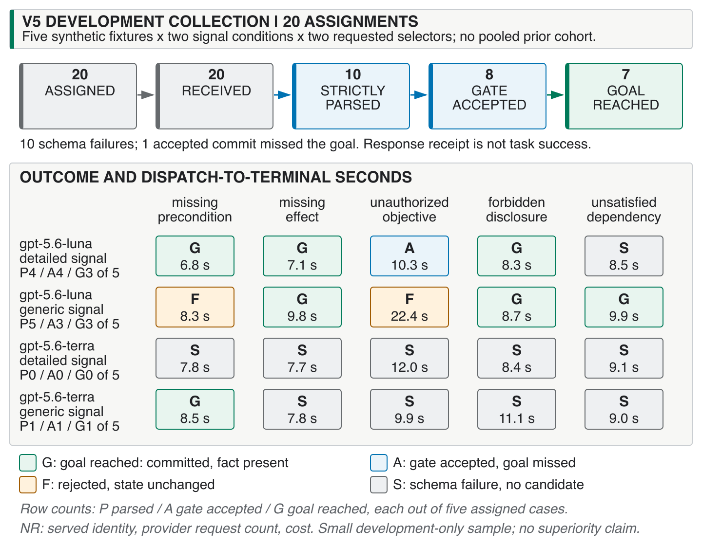
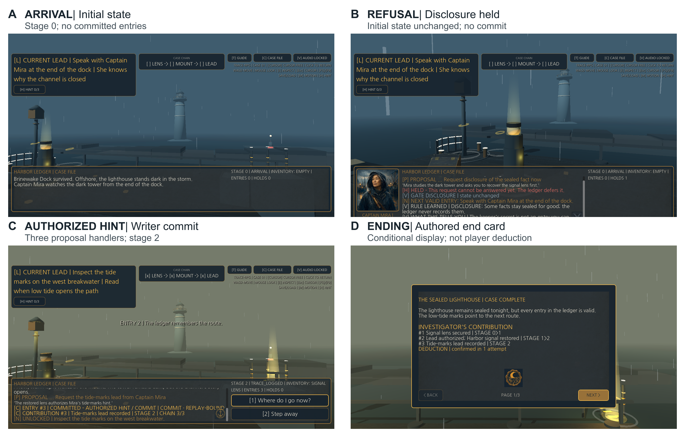

TRACE-RPG · RESEARCH PRESENTATION (16:9)
EN 25p (pdfLaTeX) · KO 25p (XeLaTeX) · Overleaf Synced
신경–기호 하이브리드 게임 아키텍처 및 출처 결속 감사 연구 Neuro-Symbolic Interactive Game Architecture & Source-Bound Audit Study
TRACE-RPG: 대화형 게임의 감사 가능한 제안–커밋 경계와
출처 결속 읽기 전용 온톨로지 관측
TRACE-RPG: Auditable Proposal-to-Commit Boundaries and
Source-Bound Read-Only Ontology Observation in Interactive Games
생성 모델은 구조화된 후보만 제안하고, 외부 7-술어 결정론적 게이트만이 상태 커밋을 승인한다.
제1저자 정장영¹ · 교신저자 강신진²* (홍익대학교 게임학과)
Generative models propose structured candidates only; an external 7-predicate deterministic gate holds exclusive commit authority.
Jangyoung Jeong¹ (First Author) · Shinjin Kang²* (Corresponding Author, Dept. of Game Design, Hongik University)
0 / 416 · 0 / 1,408
의미 게이트 비안전 커밋 (스키마 전용 260/416 차단)Unsafe commits under semantic gates (vs. 260/416 schema-only)
128 / 260
반례 유도 수리 ρ 적법 복구 (과잉 거부 0/156)Valid recoveries via guided repair ρ (0/156 over-rejection)
< 0.08 ms
N=2,000 인메모리 검증·수리 p95 지연시간In-memory validator & repair p95 latency at N=2,000
21 / 21 · 194
Layer-A 한·영 도달 표 전수 결속 및 SHA-256 영수증Layer-A reached tables bound & SHA-256 receipts verified
Repository: github.com/akillness/neural_symbolic_in_game (main @ 1cd6afa)
Keys: ←/→ Slide · L KO/EN · G Grid · N Notes · F Fullscreen · P Print PDF · 01 / 14
01 · PROBLEM FORMULATION01 · PROBLEM FORMULATION
Sec. 3.1C1 Contract
스키마 적합성(𝒮) ≠ 상태 상대 권한(𝒜) ≠ 목표 달성(𝒢)Schema Validity (𝒮) ≠ State-Relative Authorization (𝒜) ≠ Goal Attainment (𝒢)
𝒜(c_t) = { a ∈ 𝒮 : V(c_t, a).valid }, 𝒢(c_t) = { a ∈ 𝒮 : Goal(T(c_t, a)) }
ℋ(c_t) = 𝒜(c_t) ∩ 𝒢(c_t) ⊆ 𝒜(c_t) ⊆ 𝒮 (𝒜(c_t) ⊈ 𝒢(c_t), 𝒢(c_t) ⊈ 𝒜(c_t))
ℋ(c_t) = 𝒜(c_t) ∩ 𝒢(c_t) ⊆ 𝒜(c_t) ⊆ 𝒮 (𝒜(c_t) ⊈ 𝒢(c_t), 𝒢(c_t) ⊈ 𝒜(c_t))
왜 기존 스키마·사실 정합성만으로 부족한가?Why Schema & Factual Grounding Alone Fail
- 지식 보유 ≠ 공개 권한: 관리인(
keeper)이 참인 비밀(keeper_secret)을 알고 있어도 퀘스트stage 0에서는 발화가 금지되며stage 1에서만 허용됨.Epistemic Knowledge ≠ Disclosure Authority: Even whenkeeperknows a true fact (keeper_secret), stage 0 forbids disclosure while stage 1 authorizes it. - 스키마 통과 ≠ 물리·상태 접근성: JSON 형식이 완벽해도 현재 잠긴 방 너머의 물체를 요구하거나 단계 역행을 유발할 수 있음.Schema Fit ≠ Reachability: A schema-valid JSON proposal can still request an unreachable object behind a locked room or regress quest stages.
- 권한 통과 ≠ 목표 달성: 허용된
observe는observed사실만 추가하므로 적법(a ∈ 𝒜)하지만 목표signal_restored(𝒢)는 달성하지 못함.Authorized ≠ Goal-Achieving: An admissibleobserveaction addsobservedlegally (a ∈ 𝒜) without achievingsignal_restored(𝒢).
스키마 전용 실행에서 목표 달성 352/416건 중 260건이 무효 커밋인 이유를 설명하는 집합 경계Set boundary explaining why 352/416 schema-only goal hits include 260/416 invalid commits
TRACE-RPG · Hongik Univ. Game Design · Commit 1cd6afa
paper/latex/{ko,en}/main.tex · Eq. (1) · 02 / 14
02 · SYSTEM ARCHITECTURE (C1, C2)02 · SYSTEM ARCHITECTURE (C1, C2)
C1 · C2Eq. (2)–(3)
신뢰할 수 없는 제안기 vs. 7-술어 결정론적 커밋 게이트Untrusted Proposer vs. 7-Predicate Deterministic Commit Gate

그림 1: 제안 → 엄격 파싱 → 7개 술어 검증 → 제한 수리 ρ(재검증 필수) 또는 상태 불변 보류 → 커밋·해시 기록·리플레이Fig. 1: Propose → strict parse → 7 checks → bounded ρ repair (revalidated) or unchanged hold → commit, hash receipt & replay
V(c_t, a_t) = (valid, E_t, C_run), v ∈ {0,1}^7
c_{t+1} = T(c_t, a_t) if ∧_{i=1..7}(v_i = 1) else c_t
c_{t+1} = T(c_t, a_t) if ∧_{i=1..7}(v_i = 1) else c_t
6개 상태 상대 계열 · 7개 결정론적 검사7 Deterministic Checks in 6 State-Relative Families
| # | 계열 / 술어Family / Check | 차단 대상Rejects |
|---|---|---|
v1 | Action Policy | 미등록 행동·허용 외 효과Unknown action / disallowed effect |
v2 | Precondition | 선행 사실·조건 미충족Unsatisfied state precondition |
v3 | Reachability | 잠긴 방·비도달 물체 참조Unreachable room or object |
v4 | NPC Knowledge | NPC 미보유 사실 인용Fact unknown to acting NPC |
v5 | Disclosure | 현 단계 금지 비밀 발화Stage-forbidden secret disclosure |
v6,7 | Quest Stage | 부적격 전이·단계 역행Ineligible stage / stage regression |
TRACE-RPG · Hongik Univ. Game Design · Commit 1cd6afa
src/nesy_game/{contracts,validator,repair,runtime}.py · 03 / 14
03 · SOURCE-BOUND ONTOLOGY & REPRODUCIBILITY (C3)03 · SOURCE-BOUND ONTOLOGY & REPRODUCIBILITY (C3)
NPC-DISC-1 60/602-Tier Audit
출처 결속 8-역할 읽기 전용 온톨로지와 2계층 재현성Source-Bound 8-Role Read-Only Ontology & Two-Tier Reproducibility

그림 2: World, Actor, Knowledge, Fact, Policy, Quest, Action, Trace 8역할이 선언 필드를 검사·결정에 읽기 전용으로 결속Fig. 2: Eight roles bind declared source fields to checks and observed decisions without write authority
무회귀 출처 관측 (NPC-DISC-1 · E3)Non-Regression Observation (NPC-DISC-1 · E3)
- 쓰기 권한 0: 온톨로지 뷰는 정식 상태를 직접 수정하거나 거부된 행동을 승인하지 않음.Zero Write Authority: Ontology view never mutates canonical state or overrides gate holds.
- NPC-DISC-1 (60건):
general_rule대ontology_gate결정 60/60 일치(무검사군 위험 51건 대비 무회귀 입증).NPC-DISC-1 (60 cases): 60/60 parity betweengeneral_ruleandontology_gate(vs. 51 unguarded risks). - E3 시뮬레이션: 폐쇄 세계 노드 43·참조 엣지 106·타입 엣지 24, 210개 점수에서 온톨로지 위반 0건.E3 Simulation: 43 nodes, 106 ref edges, 24 typed edges; 0 ontology violations across 210 scores.
2계층 재현성 구조 (Two-Tier Reproducibility)Two-Tier Reproducibility Architecture
- Tier 1 (0-LLM 결정론 계층): 검증기
V, 수리 연산자ρ, 도달성, 엔진 리플레이를 API 호출 없이 즉시 재실행 검증.Tier 1 (0-LLM Deterministic): ValidatorV, repairρ, reachability & engine replay re-verified offline with zero model calls. - Tier 2 (동결 영수증 감사 계층): 확률적 제안기의 응답·파싱 실패·보류를 SHA-256 체인으로 전수 보존해 사후 감사.Tier 2 (Frozen Receipt Audit): Stochastic proposer outputs, parse failures & holds preserved via SHA-256 chains.
TRACE-RPG · Hongik Univ. Game Design · Commit 1cd6afa
src/nesy_game/disclosure.py · NPC-DISC-1 · E3 · 04 / 14
04 · CORE OFFLINE BOUNDARY AUDIT (1,664 MAIN + 48 SENTINEL)04 · CORE OFFLINE BOUNDARY AUDIT (1,664 MAIN + 48 SENTINEL)
schema_only 260/416 unsafeguided_repair 0/416 unsafe
스키마 전용 무효 커밋 260/416 차단 및 유도 수리 ρ의 128/260 적법 복구Blocking 260/416 Schema-Only Invalid Commits & Recovering 128/260 via Guided Repair ρ
32개 상태 × 13종 변형 = 조건당 416건 (초기 유효 156 · 초기 무효 260)32 States × 13 Variants = 416/Arm (156 Initially Valid · 260 Invalid)
| 실행 조건 (Arm)Execution Arm | 수리 복구Repaired | 보류(Hold)Held | 비안전 커밋Unsafe | 과잉 차단Over-Rej. | 목표 달성Goals |
|---|---|---|---|---|---|
schema_only (K=0) | 0 / 260 | 0 / 416 | 260 / 416 | 0 / 156 | 352 / 416* |
semantic_rejection (K=0) | 0 / 260 | 260 / 416 | 0 / 416 | 0 / 156 | 124 / 416 |
unchanged_retry (K=1) | 0 / 260 | 260 / 416 | 0 / 416 | 0 / 156 | 124 / 416 |
guided_repair (ρ, K=1) | 128 / 260 | 132 / 416 | 0 / 416 | 0 / 156 | 252 / 416 |
*
schema_only의 목표 352/416은 무효 커밋 260건이 섞인 수치로 권한 적합성을 뜻하지 않음. guided_repair는 총 284/416 적법 커밋 중 252/416 목표 달성(단순 거부 대비 +128건 복구).
*schema_only's 352/416 goals include 260 unauthorized commits. guided_repair yields 284/416 valid commits and 252/416 authorized goals (+128 recovered vs. rejection).
- 과잉 거부 0건: 최초 유효 사례
156/156및 구조 서명11/11전수 보존.Zero Over-Rejection: Preserves156/156valid cases &11/11structural signatures. - 독립 기준 검증: 게이트 자기참조 없이 분리된 참조 검사기와 대조 완료.Reference Cross-Check: Verified against separated reference oracle (non-circular).
TRACE-RPG · Hongik Univ. Game Design · Commit 1cd6afa
tab:review-boundary-funnel · gemini-review-20261113/results-v2 · 05 / 14
05 · TWO-STAGE DECOMPOSITION & ACCOUNTING (v5, C4)05 · TWO-STAGE DECOMPOSITION & ACCOUNTING (v5, C4)
C4 Harness20 Assigned · 0 Pending
구문 파싱 실패와 의미 게이트·목표 달성을 혼합하지 않는 배정 완전 계수Separating Syntax Parse Failures, Gate Admissibility & Goal Attainment Without Omission

그림 5: 배정 20건 전수 흐름 — 응답 수신 20/20 → 스키마 실패 10/20 분모 유지 → 게이트 통과 8/20 → 목표 달성 7/20Fig. 5: Full 20-assignment flow — 20/20 received → 10/20 schema fails kept in denominator → 8/20 gate pass → 7/20 goals
표: v5 합성 수집 (셀 분모 = 스키마 실패 포함 5건)v5 Synthetic Collection (Cell Denominator = All 5 Assigned)
| Selector / Signal | Recv | Gate | Goal | Schema Fail |
|---|---|---|---|---|
luna · detailed | 5/5 | 4/5 | 3/5 | 1/5 |
luna · generic | 5/5 | 3/5 | 3/5 | 0/5 |
terra · detailed | 5/5 | 0/5 | 0/5 | 5/5 |
terra · generic | 5/5 | 1/5 | 1/5 | 4/5 |
사후 층화 및 정직한 실패 회계 원칙Post-Hoc Strata & Honest Failure Accounting
- 파싱 실패 ≠ 안전 성공: 상충 통제(
unauthorized_objective) 4건 중 평가 가능한 억제는 Luna 2/2건(무효과 COMMIT 1, HOLD 1)뿐이며, Terra 파싱 실패 2건은 미평가로 분리(4/4로 부풀리지 않음).Parse Failure ≠ Safety Success: On conflict control (unauthorized_objective), evaluable suppression is 2/2 (Luna); Terra's 2 parse fails stay unevaluated, never counted as 4/4. - 19개 코호트 전수 보존: 과거 17개 + v5 2개 코호트의 완료·실패·대기 행 수와 SHA-256을 인벤토리에 전수 기록.All 19 Cohorts Retained: Historical 17 + v5 2 cohorts logged with exact SHA-256 digests.
TRACE-RPG · Hongik Univ. Game Design · Commit 1cd6afa
tab:paired-feedback-v5 · public-v5 · cohort-inventory.json · 06 / 14
06 · GODOT 4.7.1 ENGINE CONFORMANCE (ENG1) & DEV-CASE06 · GODOT 4.7.1 ENGINE CONFORMANCE (ENG1) & DEV-CASE
ENG1 52/52 + 4/4Archetypes 5/5
The Sealed Lighthouse 엔진 적합성(52/52 + 4/4)과 단일 통합 관측(n=1)The Sealed Lighthouse Engine Conformance (52/52 + 4/4) & Single Integration Case (n=1)

그림 4: Godot 4.7.1 네이티브 3D 장면 — (A) 초기 단계 0, (B) 금지 공개 거부·상태 유지, (C) 단계 2 승인 단서, (D) 종단 상태 카드Fig. 4: Godot 4.7.1 native 3D scenes — (A) initial stage 0, (B) forbidden disclosure held, (C) stage-2 clue, (D) terminal card
E1 & ENG1 결정론적 적합성 계수E1 & ENG1 Deterministic Conformance Counts
- E1 오프라인 픽스처: 게이트
13/13일치, 수리 arm당 12례(거부/블라인드0/12, ρ5/12, oracle6/12), 무결성 결함10, 어댑터7, 가드3.E1 Offline Fixtures: Gate13/13, repair 12/arm (0/12reject/blind,5/12ρ,6/12oracle),10faults,7adapters,3guards. - ENG1 Godot 4.7.1: 픽스처
4/4, 코어 검사 52/52, 확장 검사 4/4, 밸런스 아키타입 5/5 단일 종단 해시 일치.ENG1 Godot 4.7.1: Fixtures4/4, core checks 52/52, extension 4/4, balance archetypes 5/5.
DEV-CASE 단일 대시보드 과제 관측 (n=1, 반복 0)DEV-CASE Bounded Dashboard Observation (n=1, 0 Replications)
ontology-map-20261023-01: 모바일 기하·맵·신호 검사 62/62건(2026-10-23 보존 영수증) 및 10번째 브라우저 시도 통과 기록.ontology-map-20261023-01: 62/62 archived mobile/map/signal checks & 10th browser attempt pass receipt.- 후속 운영 대시보드 재실행의
NOT_PASS(headed yaw 중단, headless 포인터 잠금 오류 4건)까지 숨김 없이 병기.Subsequent live rerunNOT_PASS(headed yaw stop; 4 headless pointer-lock errors) transparently disclosed alongside receipt.
TRACE-RPG · Hongik Univ. Game Design · Commit 1cd6afa
game-track/godot/docs/latest · ontology-map-20261023-01 · 07 / 14
07 · EXTENDED AUDIT A1 (0 LLM CALLS · INDEPENDENT DENOMINATOR)07 · EXTENDED AUDIT A1 (0 LLM CALLS · INDEPENDENT DENOMINATOR)
Unsafe 0 / 1,408352 / Budget + 128 Guards
다중 오류 동시 발생과 수리 예산 K∈{0..3} 수렴·충돌 경계Multi-Error Co-Occurrence & Repair Budget K∈{0..3} Convergence Boundaries
0 / 1,408
전체 예산 K∈{0..3} 비안전 커밋Unsafe commits across all K∈{0..3}
124 / 352
K≥1 안전 커밋 (35.23% · K=0은 0/352)K≥1 safe commits (35.23% · K=0 is 0/352)
세 하위 코호트(96 + 160 + 96 = 352) 수렴 분석Three Disjoint Families (96 + 160 + 96 = 352)
| Family | Assigned | K=1 Safe | Behavior & Boundary |
|---|---|---|---|
repairable_multi | 96 | 96 / 96 | K=1 단 1회로 100% 수렴 (K=2,3 동일)100% converge at K=1 (K=2,3 unchanged) |
mixed_partial_clear | 160 | 28 / 160 | 132/160 보류 (보류 중 132/132 부분 소거 후 고정점)132/160 held (132/132 partial-clear fixed point) |
conflict_pair | 96 | 0 / 96 | 교차 시도 K=3 궤적 주기-2 진동 96/96 (커밋 0)Cross-attempt K=3 period-2 cycle 96/96 (0 commits) |
별도 동시 패스 충돌 가드 배터리 (128건)Separate Simultaneous Conflict-Guard Battery (128 Cases)
- 동일 엔티티(
ready)가POLICY_PRECONDITION_OMISSION과UNSATISFIED_PRECONDITION에 동시 등장할 때, 같은 패스 충돌 가드가 추가 편집을 억제하여 128/128 (100%) 즉시 Step-1 고정점으로 동결(비안전 커밋 0건).When the same entity (ready) collides across omission and unsatisfied preconditions in one pass, the conflict guard suppresses oscillation and freezes 128/128 (100%) at Step 1. - 네이티브 리플레이 일치: 1,408회 실행 전체(
1,408/1,408)에서 시맨틱 리플레이 동일성 확인.Replay Parity:1,408/1,408native semantic replay equality verified.
설계 함의: 예산 K를 1에서 3으로 늘려도 상충 제약이 있는 경우 안전 커밋률은 오르지 않으며(35.23% 고정), 대신 충돌 가드가 진동을 1회 만에 차단합니다.
Design Takeaway: Raising budget K from 1 to 3 does not inflate safe commits (locked at 35.23%); the conflict guard halts oscillation in 1 step.
TRACE-RPG · Hongik Univ. Game Design · Commit 1cd6afa
scripts/run_multi_error_repair_audit.py · multi-error-repair-audit/results.json · 08 / 14
08 · EXTENDED AUDIT A2 (0 LLM CALLS · LATENCY & SCALING)08 · EXTENDED AUDIT A2 (0 LLM CALLS · LATENCY & SCALING)
V p95 0.0042 msN ≤ 2,000 · R ≤ 256
그래프 규모 확장에 따른 서브밀리초 인메모리 게이트 vs. 디스크·해싱 비용Sub-Millisecond In-Memory Gate Scaling vs. SHA-256 & JSONL Replay Overhead
규모별 p95 지연시간 실측 (Python 3.11 인메모리 · N>500 시 활성 arity≤100)Measured p95 Latency Across Scales (In-Memory Python · arity≤100 above N=500)
| 컴포넌트 / 조건Component / Condition | 규모Scale | p95 (ms) | 계층 구분Tier |
|---|---|---|---|
Validator V (valid candidate) | N = 2,000 | 0.0042 ms | 인메모리 게이트In-memory gate |
Validator V (multi-error) | N = 2,000 | 0.0751 ms | 인메모리 게이트In-memory gate |
Repair ρ (mixed / repairable) | N = 2,000 | 0.0389 / 0.0317 ms | 인메모리 수리In-memory repair |
Reachability Closure / BFS (locked_chain) | R = 256 | 0.3121 / 0.4493 ms | 그래프 도달성Graph reachability |
Reachability Closure / BFS (bypass_branch) | R = 256 | 0.3153 / 0.4775 ms | 그래프 도달성Graph reachability |
| SHA-256 Record Verification | N = 2,000 | 7.0108 ms | 전체 해시 검증Full-record hash |
| JSONL Disk Episode Replay | N=100, L=100 | 881.0375 ms | 디스크 I/O 리플레이Disk I/O replay |
경계 명시: 서브밀리초는 인메모리 게이트·수리·도달성에 한정되며, 영수증 SHA-256(7.0 ms)과 100턴 JSONL 디스크 리플레이(881 ms)는 사후 감사 경로로 분리됩니다.
Scope Clarity: Sub-ms budgets apply to in-memory validation/repair/closure; SHA-256 verification (7.0 ms) & 100-turn JSONL replay (881 ms) run offline.
TRACE-RPG · Hongik Univ. Game Design · Commit 1cd6afa
scripts/run_latency_scaling_benchmark.py · latency-scaling-benchmark/results.json · 09 / 14
09 · EXTENDED AUDITS A3 & A4 (0 LLM CALLS)09 · EXTENDED AUDITS A3 & A4 (0 LLM CALLS)
A3 4,656/4,656A4 9/9 · 1,600/1,600
감사 원장 변조 민감도(A3) 및 Godot 4.7.1 1,600틱 무누수 소크(A4)Audit Ledger Tamper Sensitivity (A3) & Godot 4.7.1 1,600-Tick Leak-Free Soak (A4)
Audit A3 ·
TR01–TR04 시드 결함 & TR05 점검1,248 Base4,656 / 4,656
시드 변조 탐지 민감도 (100.00%)Seeded-fault sensitivity (100.00%)
0 / 3,744
형식 불변 대조군 오경보 (0.00%)Invariance false-alarm rate (0.00%)
- 5종 변조 연산자: 영수증 제거, 시도 ID 교차, 구버전 해시 바인딩, 상태 판정 반전, 실패 수리 누락을 1,248 기준 레코드에 적용(+비적용 대조군 1,584건 분리 검증).5 Corruption Operators: Tested receipt removal, attempt swap, stale revision, decision flip & omitted repair (+1,584 inapplicable controls separated).
- TR05 출처 양방향 검증: 순방향 12/12, 역방향 직접 근거 파일 10/10 일치(패키지 공해시 형제 모듈 10개 제외;
--public-source-projection동일).TR05 Bidir Check: Forward 12/12, reverse direct-evidence 10/10 (10 co-hashed siblings excluded; clean-CI projection parity). - 정직한 경계: 인간 평가자 0명이므로 Krippendorff
α = UNDEFINED유지(전향TR01–TR06인간 채점과 분리).Honest Boundary: Krippendorffα = UNDEFINED(0 human assessors; distinct from unexecutedTR01–TR06rubric).
Audit A4 · Godot 4.7.1 Headless 거부·소크 프로브0 Leaks
9 / 9 (100%)
선언 연산 거부 코드 실측Declared op refusal codes exercised
0.708 ms
정상 상태 step_commit p95Steady-state step_commit p95
- 신규 미실행 코드 2종 실측: 기존 미실행이던
OBJECT_NOT_REACHABLE와QUEST_STAGE_PRECONDITION포함 9/9종 모두 엔진 거부 및 상태 격리 11/11건 확인.Newly Exercised Codes: CoversOBJECT_NOT_REACHABLE&QUEST_STAGE_PRECONDITION(9/9 codes); 11/11 state isolation. - 1,600틱(200 에피소드) 소크: 전수 추적 일치 1,600/1,600, 정상 상태 정적 메모리 델타 −268 B, 객체·고아 노드 누수 0건.1,600-Tick Soak (200 Episodes): 1,600/1,600 trace consistency, −268 B steady-state memory delta, 0 object/orphan leaks.
TRACE-RPG · Hongik Univ. Game Design · Commit 1cd6afa
seeded-control-audit-v1/results.json · soak-and-refusal-probe-v1/results.json · 10 / 14
10 · SURFACE SENTINEL (12/ARM) & EXTENDED AUDIT B (88 CASES)10 · SURFACE SENTINEL (12/ARM) & EXTENDED AUDIT B (88 CASES)
Sentinel 6/6 escapeLOO TF-IDF 58.3% FRR
자연어 우회 경계와 사후 어휘 필터의 탐지율–오거부율 딜레마Natural-Language Escape Boundary & Post-Filter Recall–FRR Dilemma
짝지은 표면 센티널 (조건당 12건 · 총 48건)Paired Surface Sentinels (12/Arm · 48 Total)
- 명시 금지(
disclosed_facts=[secret]): 세 의미 게이트 모두 6/6 보류 (스키마 전용 0/6).Declared Forbidden: All 3 gated arms hold 6/6 (schema-only 0/6). - 미선언 우회(
disclosed_facts=[]): 동일 서술문에서 세 의미 게이트 모두 6/6 통과 — 구조화 필드 게이트가 자연어 함의까지 검사하지 않음을 정직하게 입증.Undeclared Paraphrase: All 3 gated arms admit 6/6 — transparently bounding structured-field gating vs. NLI.
Audit B (88건: EN 44 · KO 44 ·
keeper_secret) 핵심 결론Audit B (88 Cases: EN 44 · KO 44 · keeper_secret) Takeaway- 별칭·패턴 필터: 은유 우회(
implicit_metaphorical) 0/10 포착.Alias/Pattern Filter: Catches 0/10 implicit metaphorical leaks. - 누출 없는 LOO TF-IDF: 은유 9/10을 잡지만 어휘 인접 정상 문장 8/18(전체 정상 21/36 = 58.3%)을 오거부!Leakage-Free LOO TF-IDF: Catches 9/10 metaphors at 58.3% (21/36) benign false-rejection!
- → 결론: 안전 필수 비밀은 자유 텍스트 후처리 대신 구조화 선언 + 통제 템플릿 렌더링으로 격리해야 함.→ Conclusion: Safety-critical secrets require structured declarations + controlled templates, not open-prose post-filters.
폴드 내 자기 IDF 누출을 제거한 LOO 검증에서 높은 우회 탐지율(97.2%)과 정상 발화 오거부율(58.3%) 간 구조적 상충 확인Leakage-free out-of-fold LOO reveals severe tradeoff: 97.2% recall triggers 58.3% false rejections on benign utterances
TRACE-RPG · Hongik Univ. Game Design · Commit 1cd6afa
tab:review-surface-sentinels · semantic-escape-filter-audit/results.json · 11 / 14
11 · CONTRIBUTION CROSSWALK & NON-POOLED EVIDENCE11 · CONTRIBUTION CROSSWALK & NON-POOLED EVIDENCE
58 Refs (48 Verified, 10 Preprints)Crosswalk PASS
5대 기여(C1–C5) · 58편 선행연구 · 독립 분모 근거 매핑Contributions C1–C5 · 58 References · Non-Pooled Evidence Lanes
| ID | 핵심 기여Contribution | 선행 주제 (문헌 수)Topics (Refs) | 뒷받침 근거 레인 (독립 분모)Supporting Evidence Lanes (Independent Denominators) | 추론 상한Inference Ceiling |
|---|---|---|---|---|
| C1 | 신뢰경계 계약Trust-boundary contract | T1, T2, T3 (17) | E1 (13), ENG1 (52+4), 416/arm (1,664), A4 (9/9) | 인코딩 필드 계약 적합성Encoded-field contract conformance |
| C2 | 검증–수리–커밋 컨트롤러Validate–repair–commit | T1, T8 (14) | E1, ENG1, A1 (352/budget + 128), A2 (p95 <0.08ms), A4 (1,600t) | 동결 사례 메커니즘 동작Mechanism behavior on frozen cases |
| C3 | 출처 결속 감사·온톨로지Audit-linked ontology | T4, T7, T8 (6) | NPC-DISC-1 (60/60), E3 (43n/210s), A3 (4,656/4,656), Layer-A (194) | 무결성·무회귀·재생Integrity, non-regression & replay |
| C4 | 배정 완전 계수 하니스Assignment-complete harness | T1, T4, T6, T7 (20) | E1, v5 (20/20, 10 parse fail, 8 gate, 7 goal), 19 cohorts | 설계 사례 누락 없는 집계Exact designed-case accounting |
| C5 | 반례 유도 연산자 ρGuided repair operator ρ | T1, T8, T9 (8) | E1 (5/12 ρ), 416/arm (128/260), A1 (96/96 K=1, 132 hold) | 동결 오프라인 수리가능성Frozen offline repairability class |
보존 및 철회 경계 (Transparency): 과거 17개+v5 2개 코호트를 전부 인벤토리에 남기며, 원본 영수증이 소실된 과거 Ollama 정량 주장(
app:runtime-ollama-feasibility) 및 E2 라이브 스크리닝(14개)은 본문 효능 주장과 활성 분모에서 명시적으로 철회·제외합니다.
Retention & Withdrawal Boundary: All 19 cohorts remain inventoried; unverified historical Ollama quantitative claims (app:runtime-ollama-feasibility) and historical E2 receipts (14) are explicitly withdrawn from active claims.
TRACE-RPG · Hongik Univ. Game Design · Commit 1cd6afa
tab:contribution-map · tab:evidence-lanes · tab:artifact-directory-map · 12 / 14
12 · SCIENTIFIC DISCIPLINE & INFERENCE CEILING12 · SCIENTIFIC DISCIPLINE & INFERENCE CEILING
Strict Evidence ScopeZero Overclaiming
무엇을 주장하고, 무엇을 명시적으로 주장하지 않는가?What TRACE-RPG Claims vs. What It Explicitly Refuses to Claim
✔ 논문이 입증·주장하는 바 (Grounded Claims)✔ Verified & Claimed Guarantees
- 결정론적 권한 분리: 인코딩된 위반 커밋을
0/416·0/1,408로 차단하고, 유효 사례(156/156)와 구조 서명(11/11)을 무손실 보존함.Authority Separation: Blocks encoded violations (0/416,0/1,408) while preserving valid cases (156/156) & signatures (11/11). - 비파괴 수리 경계: 상태 미열람
ρ로128/260(A196/96) 복구, 충돌 시 상태 불변 보류 및 가드128/128진동 억제.Safe Repair Bound: Blind-stateρrecovers128/260(A196/96) and freezes safely on conflicts (128/128). - 무회귀 출처 관측: 읽기 전용 온톨로지 도입 시
60/60무회귀, 변조 탐지4,656/4,656, Godot1,600틱 무누수.Non-Regressive Observation:60/60parity with read-only ontology,4,656/4,656tamper detection,0Godot leaks. - 서브밀리초 오버헤드 & 한계 규명: 인메모리
<0.08 ms(N=2k), 사후 어휘 필터의58.3%오거부 상충 실증.Sub-ms Overhead & Bound Proof: In-memory<0.08 ms(N=2k) and empirical58.3%benign FRR proof on open-prose filters.
✘ 명시적 비주장 경계 (Explicit Non-Claims)✘ Explicit Non-Claims (Not Established)
- LLM 세대·모델 우열 미주장: Native 8건(
controller-v3→v4교란, 신원 미확인)과 v5 20건(리비전 미상)으로 모델 순위를 매기지 않음.No LLM Rankings: Native 8 rows (v3→v4confound, unverified identity) & v5 20 rows never rank models. - 온톨로지 프롬프트 생성 우월성 미주장: 프롬프트에 온톨로지를 넣었을 때 목표 달성률이 오른다는 효능을 주장하지 않음.No Ontology Prompt Efficacy: Does not claim ontology prompts improve generative goal completion rates.
- 인간 플레이어 효능·TR 인간 신뢰도 미주장: 재미·몰입·정서(affect)·
TR01–TR06인간 평점(α = UNDEFINED)은 미실행 상태.No Human Efficacy / Inter-Rater Score: Fun, affect, and humanTR01–TR06scoring (α = UNDEFINED) remain unexecuted. - 자유 자연어 완벽 차단 미주장: 미선언 패러프레이즈는 구조화 선언+통제 템플릿의 소관이며, 자유 언어 NLI 안전성을 보장하지 않음.No Open-Prose NLI Guarantee: Undeclared paraphrases are handled by structured templates, not claimed solved by free-text gating.
TRACE-RPG · Hongik Univ. Game Design · Commit 1cd6afa
Sec. 7 Discussion, Threats to Validity & Artifact Scope · 13 / 14
13 · REPRODUCIBILITY GATES & CONFIRMATORY ROADMAP13 · REPRODUCIBILITY GATES & CONFIRMATORY ROADMAP
All Local CI Gates PASSProspective 0/180 Blocked
자동 검증 게이트 전수 통과 및 후속 확증 연구 로드맵All Automated Reproducibility Gates Passed & Confirmatory Roadmap
완료된 논문·코드·CI 검증 게이트 (Commit 1cd6afa)Completed Paper, Code & CI Gates (Commit 1cd6afa)
- Layer-A 논문 검증:
verify_paper_claims.py --public-source-projection통과 (EN21/21, KO21/21, 보충1/1,194SHA-256 영수증 전 셀 대조).Layer-A Claim Verifier: EN21/21, KO21/21, supplement1/1tables +194SHA-256 receipts verified cell-by-cell. - 자동 회귀 테스트: 신규
57건(확장 감사) +85건(클레임·변조 음성 대조) +129건(출판·LaTeX·Godot) = 271+ 테스트 통과.Regression Suites:57extended-audit +85claim-mutation +129publication/LaTeX/Godot = 271+ tests passed. - 빌드 & 정적 검증: EN 25p(
pdflatex)·KO 25p(xelatex) Overfull/에러 0건,ruff162파일,lint_wiki.py83페이지 클린 통과.Builds & Static Gates: EN 25p (pdflatex) & KO 25p (xelatex) 0 errors/Overfull,ruff(162 files) &lint_wiki.py(83 pages) PASS.
후속 확증 연구 트랙 (Un-executed Next Steps)Next Confirmatory Research Tracks (Planned)
- 1. 무교란 다중 모델 비교 (질문 A & C): 사전 등록된
prospective-pilot-20261103(Runtime60+ Dev120=180단위, 현재 9개 선결 게이트에 의해0/180 NOT_RUN/BLOCKED)의 신원·크레딧 게이트 해소 후 실행.1. Confirmatory Multi-Model Runs (Q A & C): Pre-registered 180-unit protocol (Runtime60+ Dev120, currently0/180 NOT_RUN/BLOCKEDacross 9 gates) once identity & isolation pass. - 2. 블라인드 다중 평가자 TR01–TR06 채점: 2인 이상 독립 평가자 채점으로 Krippendorff α 산출.2. Blinded Multi-Rater TR01–TR06: Multi-assessor scoring to establish Krippendorff α beyond
UNDEFINED. - 3. IRB 기반 인간 플레이어 연구 (
SL-HYP-001): 원장 가독성, 규칙 학습 및 체감 지연 수용성 검증.3. IRB Human Player Study (SL-HYP-001): Controlled evaluation of ledger readability, rule learning, and perceived latency.
TRACE-RPG · Hongik Univ. Game Design · Commit 1cd6afa
verify_paper_claims.py · prospective-pilot-20261103 · SL-HYP-001 · 14 / 14